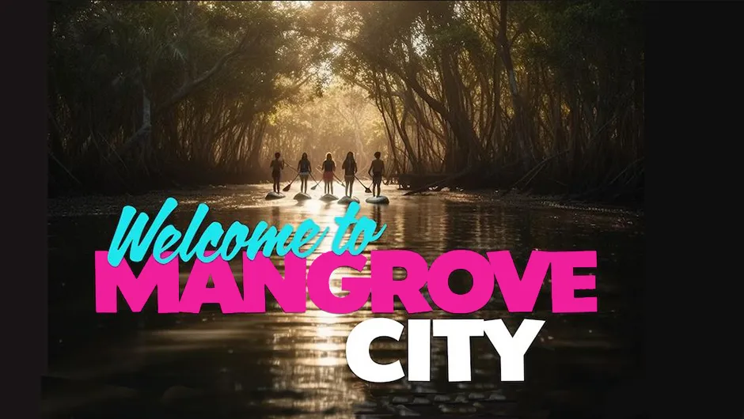
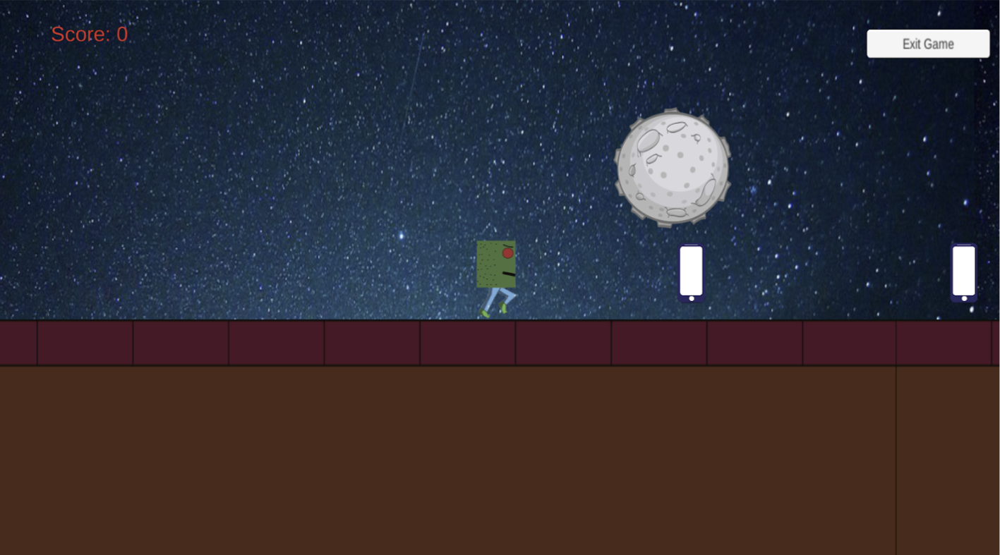
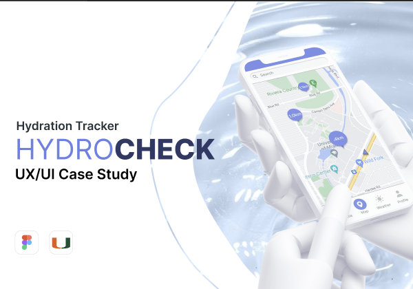
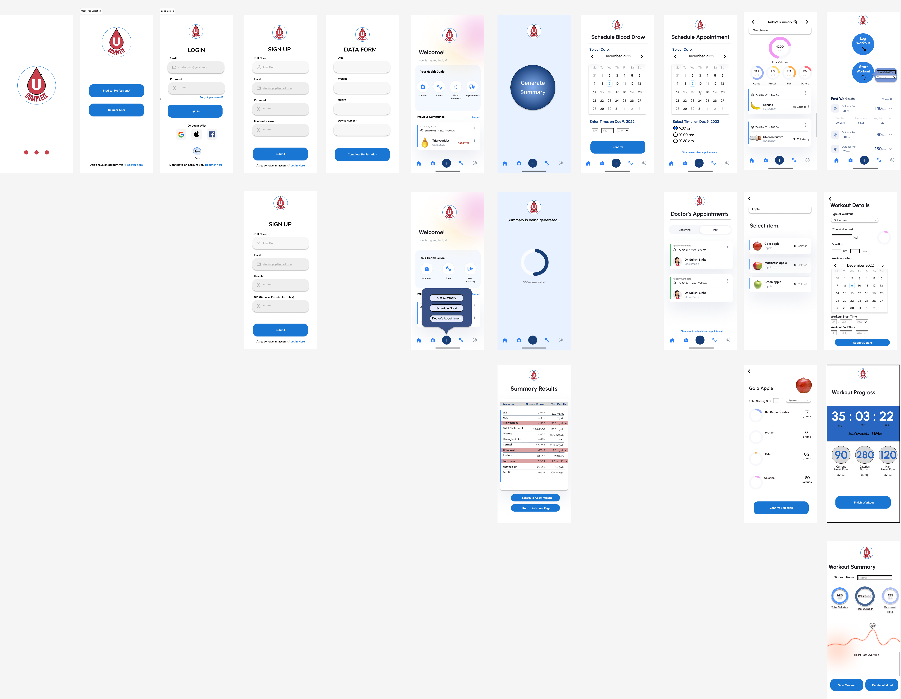

Projects
Project 1: Mangrove City - Virtual Reality
Description of Project : Mangrove City is a virtual reality experience designed to teach middle school students about the importance of mangrove in mitigating climate change issues.
View ProjectProject 2: Tech Probe - 2D Game Development
Description of Project:In "Tech Probe," your mission is to guide the Tech Guru through a mesmerizing landscape filled with coveted gadgets, predominantly smartphones, while expanding your knowledge of the ever-evolving world of technology. As you progress, you'll encounter a series of challenges that will test your skills, reflexes, and tech-savvy intellect.
View ProjectProject 3: HydroCheck - UI/UX Design
Description of Project:In "Tech Probe," your mission is to guide the Tech Guru through a mesmerizing landscape filled with coveted gadgets, predominantly smartphones, while expanding your knowledge of the ever-evolving world of technology. As you progress, you'll encounter a series of challenges that will test your skills, reflexes, and tech-savvy intellect.
View ProjectProject 4: Complete You - Mobile App Software Engineering Process
Description of Project:In "Tech Probe," your mission is to guide the Tech Guru through a mesmerizing landscape filled with coveted gadgets, predominantly smartphones, while expanding your knowledge of the ever-evolving world of technology. As you progress, you'll encounter a series of challenges that will test your skills, reflexes, and tech-savvy intellect.
View Project